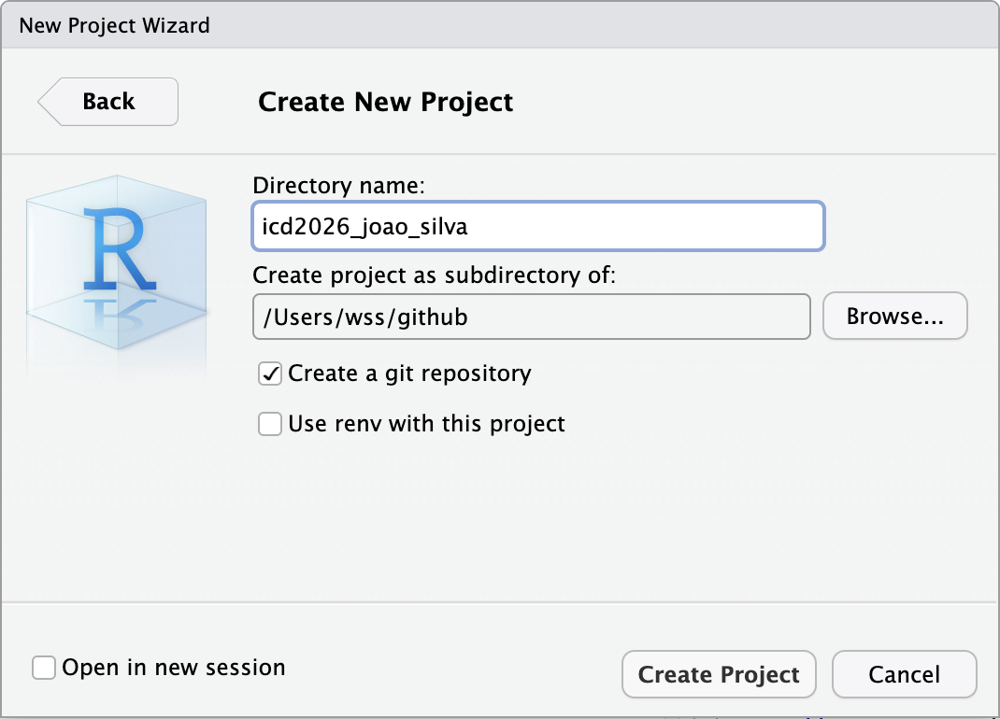

install.packages(c("tidyverse", "usethis"))6 Introdução ao RStudio
O objetivo deste capítulo é introduzir o Ambiente de Desenvolvimento Integrado RStudio, incluindo orientações sobre como instalar, criar projetos RStudio e configurar o ambiente para adotar boas práticas desde o início.
O capítulo também aborda a importância da estrutura de arquivos e pastas de um projeto de análise de dados e o uso do terminal integrado do RStudio para a execução de tarefas básicas no computador e para preparar o ambiente para uso do Git e GitHub que veremos nos próximos capítulos.
6.1 Instalação do RStudio
6.1.1 Windows
Role a página para baixo, em geral, o site detecta seu sistema operacional e disponibiliza o instalador adequado loga abaixo de
2: Install RStudio.Clique em
Download RStudio Desktop for Windowscaso seu sistema operacional seja Windows.Finalizado o download, basta clicar duas vezes no arquivo e, em seguida, clicar em em continuar/avançar/next até o início da instalação.
6.1.2 Linux
Role a página para baixo até a seção
2: Install RStudio.No bloco de downloads para Linux, escolha o instalador compatível com sua distribuição:
- Ubuntu/Debian: baixe o arquivo com extensão
.deb
- Fedora/RHEL/openSUSE: baixe o arquivo com extensão
.rpm
- Ubuntu/Debian: baixe o arquivo com extensão
Após o download, instale o pacote:
Se você baixou
.deb(Ubuntu/Debian):- Clique duas vezes no arquivo
.debpara abrir a “Central de programas / Software Center”. - Clique em Install/Instalar e informe sua senha, se solicitado.
- Clique duas vezes no arquivo
Se você baixou
.rpm(Fedora/RHEL/openSUSE):- Clique duas vezes no arquivo
.rpmpara abrir o instalador de pacotes do sistema. - Clique em Install/Instalar e informe sua senha, se solicitado.
- Clique duas vezes no arquivo
Finalizada a instalação, procure por RStudio no menu de aplicativos e abra o programa.
6.1.3 Macintosh
Role a página para baixo até a seção
2: Install RStudio.Clique em
Download RStudio Desktop for macOS(ou opção equivalente para Mac).Após concluir o download, abra o arquivo
.dmg.Na janela que aparecer, arraste o ícone do RStudio para a pasta Applications.
Abra a pasta Applications e clique no ícone do RStudio para iniciar ou utilize o Spotlight.
Se o macOS exibir um aviso de segurança (“app baixado da internet”), confirme em Open/Abrir. Se necessário, vá em System Settings / Preferências do Sistema → Privacy & Security / Privacidade e Segurança e permita a abertura do aplicativo.
6.2 O que é RStudio?
RStudio é um Ambiente de Desenvolvimento Integrado (em inglês, Integrated Development Environment, IDE) poderoso para a linguagem R, destinado a cientistas e analistas de dados. Ele pode ser utilizado para escrever código de outras linguagens, mas ele é mais eficiente para escrever código da linguagem R.
6.3 O que é um Ambiente de Desenvolvimento Integrado?
Um Ambiente de Desenvolvimento Integrado (IDE) é um programa abrangente que facilita o desenvolvimento de software ao integrar múltiplas funcionalidades essenciais em uma única interface.
Além de incluir um editor de texto avançado, ele oferece recursos de construção automática e um depurador robusto.
Destacam-se também funcionalidades como:
destaque de sintaxe, que melhora a legibilidade do código ao colorir diferentes partes do código-fonte conforme sua função gramatical.
auto-completar código, que agiliza a escrita ao sugerir e completar automaticamente trechos de código baseados no contexto, e;
identificação de erros em tempo real, que ajuda a detectar e corrigir falhas antes da execução do programa.
6.4 Por que usar o RStudio?
Interface Amigável: O RStudio oferece uma interface gráfica intuitiva que facilita o trabalho, especialmente para iniciantes, com acesso visual a scripts, console, dados e gráficos simultaneamente.
Aumento de Produtividade: Recursos como autocompletar código, atalhos de teclado e visualização integrada de gráficos aceleram significativamente o fluxo de trabalho.
Gestão de Projetos: O sistema de projetos do RStudio organiza seu trabalho, mantendo todos os arquivos relacionados em um único local.
Integração com outras ferramentas: Oferece suporte a várias linguagens (R, Python, SQL), integra-se com sistemas de controle de versão como Git, e facilita a publicação de conteúdo via sistema Quarto.
Reprodutibilidade Científica: Facilita a criação de documentos reproduzíveis que combinam código, resultados e texto narrativo, essenciais para pesquisa científica e relatórios corporativos.
Comunidade Ativa: Desenvolvido pela Posit (anteriormente RStudio), conta com uma grande comunidade de usuários e desenvolvedores que constantemente melhoram a ferramenta.
6.5 RStudio IDE x Linguagem R

R é uma linguagem de programação, enquanto o RStudio é um Ambiente de Desenvolvimento Integrado que contém recursos que facilitam o uso da linguagem R.
Utilizando a analogia de um carro, R seria o motor enquanto o RStudio seria o painel de controles (dashboard). Portanto, é necessário ter os dois softwares instalados.
6.6 RStudio: Uma Visão Geral
6.6.1 Interface do RStudio

6.6.2 Painel: Source
O painel Source permite a visualização e edição de vários arquivos relacionados a diversas linguagens, tais como: .R, .qmd,.py ou arquivos de texto gerais como .txt ou .md.
Por padrão, é o painel superior esquerdo e pode ser iniciado abrindo qualquer arquivo editável no RStudio.
Cada arquivo adicional que for aberto será adicionado como uma nova guia no painel.
6.6.3 Painel: Console
Esse painel fornece uma área para executar o código interativamente, isto é, você pode “conversar” diretamente com o interpretado da linguagem R.
Por padrão, está vinculado a linguagem R, mas ele também pode fornecer um console Python.
6.6.4 Painel: Environment
Guia Environment
Essa guia exibe objetos R e Python ativos na sessão atual.
A barra de menus de
Environmentfornece carregamento ou salvamento de R workspaces, importação interativa de conjuntos de dados de arquivos de texto, Excel ou SPSS/SAS/Stata.Ela também exibe a memória usada pela sessão R ativa e um ícone de uma vassoura para remover todos os objetos ativos.
6.6.5 Painel: Output
Por padrão, o painel Output é o painel inferior direito e contém as seguintes guias:
Guia Files
Esta guia fornece uma exploração interativa da pasta de arquivos da pasta para a qual R está direcionado, chamada working directory (pasta de trabalho)
Nesta guia, você pode adicionar, excluir, renomear e remover arquivos e pastas, entre outras operações.
Guia Help
O ícone
Homeexibe a página de ajuda geral, com links para Manuais e Referências sobre o R e RStudio.Exibe também a documentação dos pacotes.
Guia Viewer
- Exibe usada conteúdos interativos tais como: gráficos interativos, aplicativos Shiny, páginas html geradas pelo Quarto, entre outros.
Guia Presentation
- Esta guia é usada para exibir slides HTML gerados pelo sistema Quarto.
Guia Plots
Esta guia exibe imagens estáticas produzidas na sessão.
Há setas para navegar entre gráficos mais antigos e mais recentes, zoom, um botão de exportação para salvar as imagens, um botão de exclusão imagem e um ícone de vassoura que limpará todos os gráficos.
Guia Packages
Esta guia permite visualizar os pacotes R instalados.
Há uma barra para pesquisar a biblioteca atual de pacotes.
Há também um botão para instalação e atualização de pacotes.
6.7 Instalando Pacotes R:
6.7.1 Usando a Guia Packages
Para instalar pacotes usando a guia Packages no RStudio:
Clique na guia Packages.
Clique em Install Packages.
Digite o nome de cada pacote que deseja instalar separados por um espaço ou vírgula na caixa de texto.
Copie os pacotes abaixo e cole na caixa de texto:
tidyverse usethis - Clique em Install para iniciar a instalação

6.7.2 Usando comandos
Uma forma alternativa de instalar pacotes é usando a linha de comando.
Você pode usar o seguinte comando diretamente no console, em um script, ou em um documento Quarto:
6.7.3 Atenção: Instalação e Carregamento de Pacotes
Usando um IDE como o RStudio, ou outro, em um computador, precisamos instalar pacotes apenas uma vez.
Entretanto, para utilizar os pacotes já instalados, precisamos sempre carregá-los com:
# carrega os pacotes utilizados
library(tidyverse)
library(usethis)
.
.6.7.4 Conexão com a Internet.
Para instalar pacotes, de R ou Python, é necessária uma conexão ativa com a internet.
Pode ser necessário repetir a instalação devido à falhas na conexão, que faz com que os arquivos dos pacotes não sejam baixados completamente.
6.8 Configurações Básicas Recomendadas do RStudio
Abra o RStudio
Clique no menu “Tools” > “Global Options” > “Basic”
Desmarque a opção: “Restore most recently opened project at startup”
Desmarque a opção: “Restore previously open source document at startup”
Desmarque a opção: “Restore .Rdata into workspace at startup”
Na caixa à direita de “Save workspace to .Rdata on exit:”, selecione “never”
Clique em “Ok” e, em seguida, em “Apply”

6.9 Projetos RStudio
6.9.1 Visão Geral
Cientistas e Analistas de dados mantêm todos os arquivos associados a um determinado projeto juntos e organizados em pastas/diretórios — dados, scripts, relatórios, etc.
Esta é uma prática tão sábia e comum que o RStudio tem suporte integrado para isso por meio dos Projects.
Os RStudio Projects (em português, Projetos RStudio) tornam simples organizar seus projetos em vários contextos, cada um com sua própria pasta e documentos diversos.
Seja com R ou Python, é fundamental criar um projeto do Editor ou IDE para organizar os arquivos de cada projeto.
Entre diversas outras, uma vantagem adicional importante do uso de projetos é que você se livra dos problemas com caminhos absolutos de arquivos e pastas, como veremos posteriormente.
6.9.2 Criando Projects no RStudio
Os Projetos RStudio estão associados a pastas.
Os Projetos RStudio podem ser criados:
Em um nova pasta, que não existe.
Em uma pasta existente, por exemplo, uma pasta que contém um repositório clonado do GitHub.
O caminho mais curto para criar um projeto no RStudio envolve:
- Clique no botão
Project, em seguida, clique emNew Project, no canto superior direito do RStudio:

- Em seguida, clique em
New Directory:

- Na janela seguinte selecione
New Project:

- Escolha a pasta dentro da qual você criará a subpasta icd2026_nome_sobrenome (que será a pasta do projeto), clicando no botão Browse.
DicaImportante! Nome da Pasta e do Projeto
No caso de um aluno hipotético chamado João Silva, o nome da subpasta seria icd2026_joao_silva, tente seguir esse padrão e não utilize acentos, espaços e caracteres especiais para nomear pastas, projetos e arquivos.
- Digite o nome do projeto (por exemplo,
icd2026_joao_silva) no campo de texto abaixo de Directory Name e clique na caixa Create a git repository:

- Clique em Create Project para criar o projeto. Em seguida, você verá algo similar a seguinte imagem no RStudio:

6.9.3 Projeto Criado
Quando um novo projeto é criado, o RStudio:
Cria um arquivo de projeto (
icd2026_joao_silva.Rproj) dentro da pasta do projeto.Carrega o projeto no RStudio e exibe seu nome no menu Projects.
Com um projeto criado, toda vez que abrir o RStudio, basta clicar em Project, logo abaixo irá aparecer o nome do projeto, clique no nome para abrir o projeto.
Caso crie mais projetos, os nomes dos projetos criados recentemente também serão exibidos.
6.10 Estrutura Recomendada para o Projeto RStudio Criado
Para organizar adequadamente os arquivos de seus projetos envolvendo a análise de dados, recomendamos que você adote uma estrutura inicial simples das pastas do seu projeto.
Considerando o caso do aluno hipotético chamado João Silva, a estrutura de pastas recomendadas para o projeto seria a seguinte:
icd2026_joao_silva/ # pasta raíz do projeto
├── dados # pasta dos dados
│ ├── brutos # subpasta para dados originais
│ └── limpos # subpasta para dados após limpeza
├── relatorios # pasta para relatórios quarto
└── scripts # pasta para scripts R
├── icd2026_nome_sobrenome.Rproj # arquivo do projeto RStudio
├── README.md # arquivo markdown de documentação do projetoEsta estrutura fornece uma organização clara que separa dados de documentos computacionais (como scripts e arquivos quarto) e também distingue entre dados brutos e limpos (ou processados), seguindo boas práticas de organização, transpaência e reprodutibilidade.
Há duas formas para criar esta estrutura de pastas usando o RStudio:
6.10.1 Usando a Guia Files*
- Na Guia
Filesdo RStudio, clique no botãoNew Folderpara criar as pastas principaisdadoserelatorios:

Navegue para dentro da pasta
dadose crie as subpastasdados_brutosedados_limpos.Navegue para dentro da pasta
relatoriose crie a subpastatestes.
6.10.2 Usando funções da linguagem R
Embora seja possível criar a estrutura de pastas manualmente usando a guia Files como mostrado na seção anterior ou utilizando recursos do sistema operacional (no caso do Windows, seria possível utilizar o Windows Explorer), saber utilizar os recursos da própria linguagem R traz duas vantagens importantes:
Você permanece no mesmo sistema (RStudio, no caso), o que pode aumentar sua produtividade.
E no médio e longo prazos, caso aprenda mais recursos da linguagem R ou de um Terminal, você será capaz de automatizar tarefas repetivas e rotineiras envolvendo a criação de pastas e arquivos, entre outas, o que aumenta significativamete sua produtividade.
Considerando o projeto RStudio recém-criado e ainda vazio, utilize a função dir.create() da linguagem R no Console do RStudio para criar a seguinte estrutura de pastas:
Para criar a estrutura de pastas podemos usar a função dir.create() da linguagem R. Para isso, digite os seguintes comandos no console R do RStudio, mas não é necessário digitar os comentários contidos após o símbolo #:
# cria a pasta principal de dados
dir.create("dados")
# cria as subpastas de dados
dir.create("dados/dados_brutos")
dir.create("dados/dados_limpos")
# cria a pasta de relatórios
dir.create("relatorios")
# cria a pasta de scripts
dir.create("scripts")6.11 Gerenciamento de Arquivos no RStudio
O RStudio suporta realce de sintaxe e outros recursos especializados de edição de código para tipos de arquivos específicos:
Scripts R, Python, SQL e outros.
Documentos computacionais e científicos em Quarto, R Markdown e LaTeX.
Conteúdo da Web, como HTML, CSS
E muitos mais.
6.11.1 Menu Files
É possível criar um novo arquivo com File -> New File:

Outra possibilidade é usar o ícone no canto superior esquerdo do RStudio:

6.12 Por que aprender a usar um terminal
Um terminal é um programa que permite interagir com o sistema operacional de um computador digitando comandos em vez de clicar em menus. Ele permite navegar por pastas, criar e organizar arquivos e executar ferramentas usadas em projetos envolvendo código e/ou dados.
Mesmo que você use o RStudio (ou outro IDE) no dia a dia, aprender o básico de um terminal pode tornar seu trabalho mais rápido e mais organizado. Isso vale no Windows(Git Bash), no Linux (Bash) e no macOS (Z shell ou Bash).
A ideia é simples: o terminal ajuda a executar tarefas comuns com comandos curtos, de forma consistente e com menos cliques.
6.12.1 Organizar projetos com mais agilidade
Em projetos com várias pastas e arquivos, o terminal ajuda a navegar e manter a estrutura organizada. Por exemplo:
- ver o caminho da pasta atual:
pwd - listar arquivos e pastas:
ls - criar uma pasta:
mkdir dados - criar um arquivo vazio:
touch teste.qmd
6.12.2 Manipular arquivos com rapidez e menos erros
No terminal, você consegue fazer operações comuns de forma direta, como:
- mover e nenomear arquivos:
mv nome_antigo.csv nome_novo.csv - copiar arquivos:
cp dados.csv dados_backup.csv - criar um arquivo vazio, como um script R:
touch scripts/01-importacao.R
Essas tarefas aparecem o tempo todo em análise de dados, especialmente ao criar e organizar um projeto e na manipulação de arquivos de dados.
6.12.3 Preparar o caminho para automação
Quando você domina o básico, fica mais fácil automatizar rotinas simples, como executar sempre a mesma sequência de passos em um projeto (por exemplo, organizar arquivos, gerar relatórios e manter tudo padronizado). Isso é parte importante de um fluxo de trabalho mais profissional e reprodutível.
6.13 Configurando o RStudio para usar o Git Bash como Terminal
Como usaremos Git e GitHub ao longo da disciplina, é conveniente que o terminal do RStudio abra em um ambiente do tipo Unix (Linux/macOS). No Windows, a forma mais simples de obter essa experiência é usar o Git Bash (instalado junto com o Git for Windows).
Ponto importante: o Git Bash não é o único terminal possível no Windows. Mesmo que o RStudio abra com outro terminal (por exemplo, PowerShell), isso não impede que você use o RStudio normalmente.
Nesta etapa, o objetivo é apenas padronizar o ambiente do terminal para que ele se comporte de forma semelhante ao que veremos em sistemas Unix (Linux/macOS). Isso facilita acompanhar os exemplos quando usarmos comandos simples de terminal, como
pwdels, para localizar pastas e arquivos do projeto e outros mais avançados.
Considerando que você utiliza um computador com Windows que já instalou o Git for Windows, siga as etapas a seguir.
6.13.1 Configurando o Git Bash como terminal padrão
6.13.2 Configurando o Git Bash como terminal padrão
Abra o RStudio.
Clique no menu Tools → Global Options → Terminal.
No campo New terminals open with:, selecione Git Bash (ou apenas Bash, dependendo da versão do RStudio).
Clique em Apply e depois em OK.
Se a opção Git Bash (ou Bash) não aparecer no menu suspenso:
Feche e abra o RStudio novamente e volte a esta tela de configuração.
Se ainda assim a opção não aparecer, verifique se o Git for Windows está instalado corretamente no computador. Em alguns casos, pode ser necessário reinstalar o Git for Windows, garantindo que ele fique disponível no sistema (por exemplo, com o Git acessível no terminal).
6.13.3 Abrindo o terminal no RStudio e verificando se é o Git Bash
No painel inferior do RStudio, clique na aba Terminal.
Se a configuração tiver sido feita corretamente (ou se o RStudio já tiver detectado automaticamente), o terminal pode exibir um prompt semelhante a:
usuario@PC MINGW64 ...A presença de “MINGW64” é um indício forte de que você está no Git Bash.
Para confirmar, digite o comando
pwde pressione Enter.O comando deve retornar um caminho, por exemplo:
/c/Users/SeuUsuario/Documentos/ICD2026_Nome_SobrenomeEsse caminho deve corresponder à pasta do seu projeto (a pasta onde está o arquivo
.Rproj, caso você já tenha criado um projeto no RStudio) ou à pasta onde você está trabalhando no momento.Se ao digitar
pwdaparecer uma mensagem de erro (ou se nada semelhante ao exemplo acima for exibido), é provável que o Terminal não esteja abrindo no Git Bash.Nesse caso, volte em Tools → Global Options → Terminal e selecione Git Bash (ou Bash) em New terminals open with:. Em seguida, clique em Apply e OK e abra o Terminal novamente.
6.13.4 Vantagens de usar o Git Bash dentro do RStudio
Evita a necessidade de alternar entre aplicativos diferentes.
Mantém seu fluxo de trabalho dentro de um único ambiente.
Aproxima a experiência do Windows do que é comum em Linux/macOS.
Facilita acompanhar exemplos e tutoriais que usam comandos do tipo Unix, como
pwdels.Reduz a necessidade de “traduzir” comandos quando o professor demonstrar procedimentos no macOS.
6.13.5 Observação importante
Em muitos computadores com Git for Windows instalado, o RStudio consegue detectar automaticamente o Git Bash e defini-lo como terminal padrão.
Ainda assim, é recomendável verificar essa opção em Tools → Global Options → Terminal, porque em alguns computadores o terminal padrão pode ser outro (por exemplo, PowerShell).
Se não estiver como Git Bash (ou Bash), basta selecionar manualmente, como indicado acima.
Se a opção Git Bash (ou Bash) não aparecer nas configurações do Terminal, feche e abra o RStudio novamente. Se ainda assim não aparecer, verifique se o Git for Windows está instalado corretamente no computador.
6.14 Atalhos de Teclado Essenciais do RStudio
Dominar alguns atalhos de teclado básicos aumentará significativamente sua produtividade no RStudio, especialmente ao trabalhar com documentos Quarto:
Windows/Linux | macOS | Função
Navegação entre painéis:
Ctrl+1|⌘+1| Move o cursor para o painel SourceCtrl+2|⌘+2| Move o cursor para o ConsoleCtrl+3|⌘+3| Move o cursor para o painel EnvironmentCtrl+4|⌘+4| Move o cursor para o painel OutputCtrl+Shift+0|⌘+Shift+0| Restaura o layout padrão dos painéisCtrl+.|⌘+.| Navegação rápida para seções/funções/chunks
Trabalho com documentos Quarto:
Ctrl+Shift+K|⌘+Shift+K| Renderiza o documento Quarto ativoCtrl+Alt+I|⌘+Option+I| Insere uma nova célula de códigoCtrl+Enter|⌘+Enter| Executa a célula de código atual ou a linha selecionadaCtrl+Shift+Enter|⌘+Shift+Enter| Executa a célula de código atual completoCtrl+Alt+C|⌘+Option+C| Executa todas as células anterioresCtrl+Alt+R|⌘+Option+R| Executa todas as células no arquivoCtrl+Alt+P|⌘+Option+P| Abre o painel para navegar pelo arquivo
Edição:
Ctrl+Shift+M|⌘+Shift+M| Insere o operador pipe do tidyverse (%>%)Alt+-|Option+-| Insere o operador de atribuição (<-)Ctrl+Shift+.|⌘+Shift+.| Insere o operador pipe nativo do R (|>)Tab: Autocompleta comandos ou nomes de variáveisCtrl+Shift+C|⌘+Shift+C| Comenta/descomenta a linha atual ou seleçãoF1: Mostra ajuda para função sob o cursorAlt+Shift+K|Option+Shift+K| Abre uma janela com todos os atalhos disponíveis
Console:
Ctrl+L|⌘+L| Limpa o ConsoleEsc: Interrompe a execução de código no RSetas ↑/↓: Navega pelo histórico de comandos no Console
6.15 Glossário de Termos
A
Ambiente de Desenvolvimento Integrado (IDE): Software que combina editor de código ou texto, console, gerenciamento de arquivos e outras ferramentas para facilitar o desenvolvimento de softwares.
C
Console: Interface de linha de comando onde os códigos R são executados interativamente e os resultados são mostrados imediatamente.
E
Editor de texto/código: Componente do IDE onde você escreve e edita o código antes de executá-lo.
P
Pacote: Coleção de funções, dados e documentação que estende as funcionalidades da linguagem R.
Painel (Pane): Áreas da interface do RStudio que contêm diferentes ferramentas, como editor, console, ambiente, etc.
Projeto RStudio: Sistema que organiza arquivos relacionados a uma análise específica em uma estrutura coerente, facilitando a organização e reprodutibilidade.
Q
Quarto: Sistema de publicação científica e técnica que permite combinar código, texto narrativo, equações e visualizações em um único documento. Sucessor do R Markdown.
R
R: Linguagem de programação de domínio específico especializada em análise e visualização de dados.
Reprodutibilidade: Princípio que permite que outros pesquisadores e profissionais possam replicar exatamente os mesmos resultados utilizando os mesmos dados e códigos. No contexto corporativo, garante a auditabilidade de análises, facilita a transferência de conhecimento entre equipes, permite verificação de resultados por diferentes stakeholders e assegura a continuidade de projetos mesmo com mudanças de pessoal.